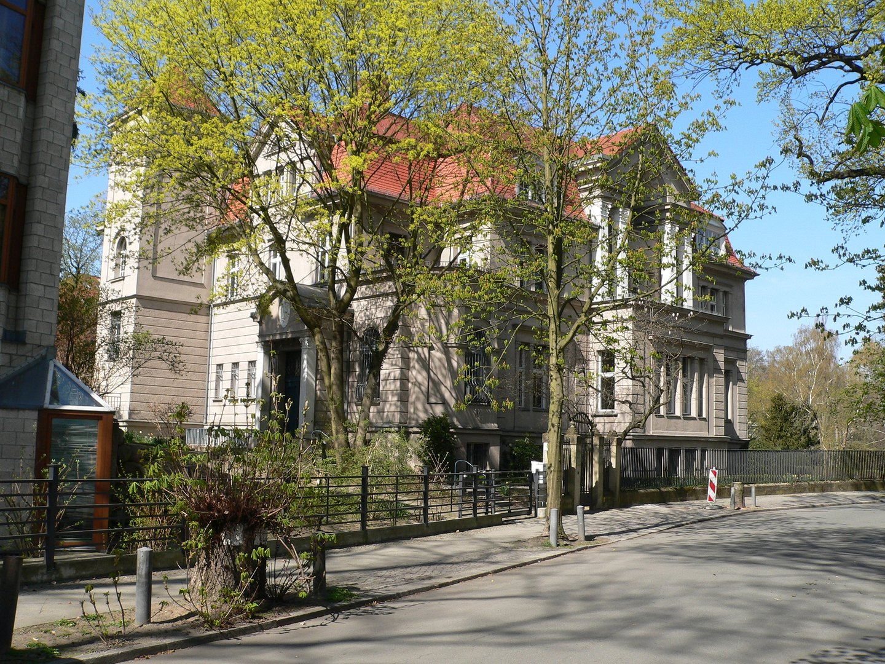

For research inquiries, collaborations, or possible student projects, you can reach me at:

Wissenschaftskolleg zu Berlin, Wallotstraße. Photograph: Fridolin freudenfett (Peter Kuley), CC BY-SA 3.0.
Fellow, College for Life Sciences
Wissenschaftskolleg zu Berlin,
Institute for Advanced Study,
Wallotstraße 19,
14193 Berlin, Germany.
Open a larger map · © OpenStreetMap contributors
If you'd like to collaborate or discuss a possible project, please see the About page for more details.